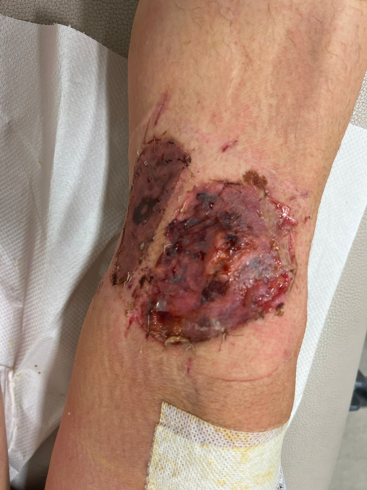
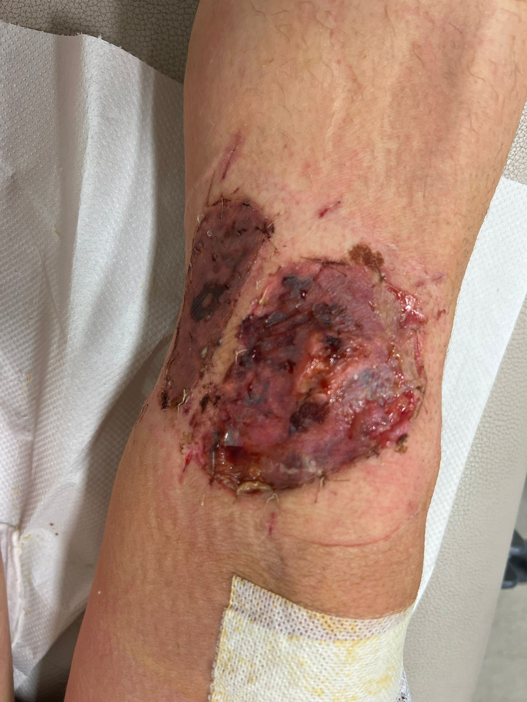
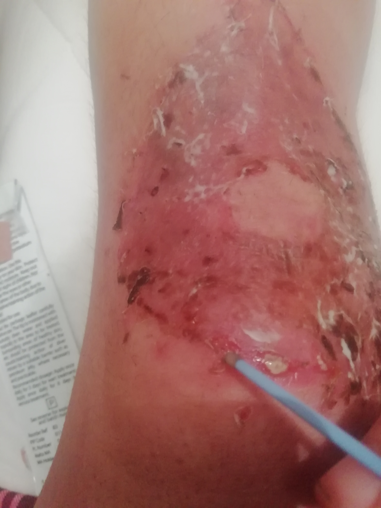
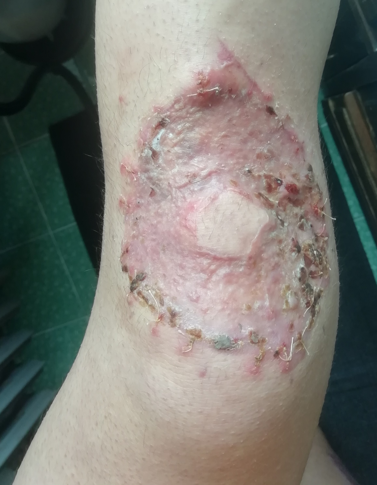
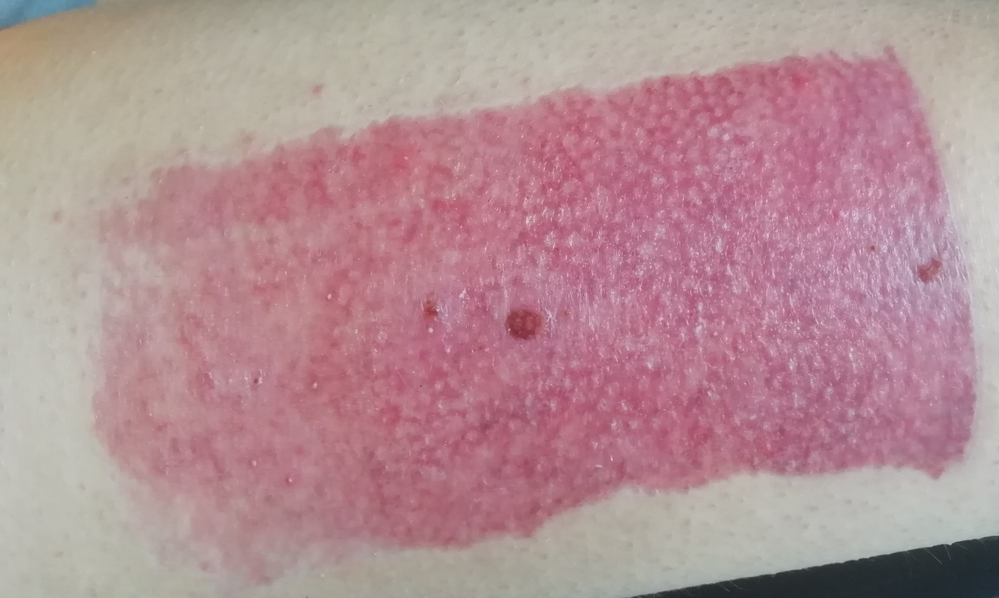

DAY 1

I felt very tired. And hungry. I thought I'd cook myself some pasta, before collapsing in bed. I only had some pasta and some cans of tuna. I took a can of tuna and looked for a can opener. I couldn't find one. My housemate told me she opened hers the toher day with a knife. I took a big knife. My housemate left the kitchen. I cut myself with the knife I was trying to open the can of tuna with. Luckily, it was a very small cut. No harm done (yet). The sight of blood made my head spin. I sat down for a little while. I gave up on my (somewhat depserate) attempt to open the can of tuna, but not on the pasta. I stood up again and turned the kettle on. And then, while transfering the boiling water from the kettle to the saucepan, I fainted! Lots of boiling water fell on the floor and my knees bathed in it for a while (5, 10, 15 seconds? I don' know). When I woke up and did not realise I burned my knees. I felt confused. And also embarrassed for some reason. I gave up on the pasta too at this point and went to bed. Once in bed, I noticed my trousers were wet. I took them off and this is what I saw. |

I searched online to make up my mind about what had just happened. Third degree, second degree? White skin. Bad sign? No blisters. Good sign? I called 111. I listened to a few minutes of preregistered covid advice. Someone eventually picked up. He asked a lot of inconsequential questions. No, my left side of my face has not done anything weird. No, I am breathing ok. No, I am not having a heart attack. I just burned my knees and I don’t know what I should do about it. He told me someone would call me back. While waiting for someone to call me back this is what I saw. |


40 minutes later, I called 111 again. I listened to a few minutes of preregistered covid advice. Someone eventually picked up. Me: I burned my knees and someone was supposed to call me back. It’s been a while, so just checking in. Them: Someone will call you soon. Are you calling to report any changes? Me: No, I am calling to ask if someone is going to call me back. Them: But are you reporting any changes? Me: Yes some blisters are forming. ThemL Ok so you are calling to report some changes. Me: Yes, ok whatever. In the meanwhile the blisters got bigger. 15 minutes later someone finally called me. She saw my knees through video call and told me to go to A&E. She told me she booked an appointment for me at 11:45 pm so I should aim to get there by then. |

After wrapping up my knees in cling film, I left for A&E with a cab in my pijama in the freezing cold. Once I got there, I told the receptionist that I had an appointment. She told me they didn't take appintments. Me: What? But I was told by 111 that they made an appointment for me! She: Yes, but we don't take appintments. Me: So why did 111 tell me that I had an appointment? She: They keep saying that to people, but we simply don't take them. I ended up spending the the whole night in A&E. By the time I saw a skin specialist it was 8.30 am. By that point the blisters had gotten really quite huge. This is what my knees looked like at around 2am (they got a lot bigger than that!). Although everyone had seemed quite worried about my knees till then (I did not feel pain, which is usually a bad sign), the skin specialist, after a vey quick look at my knees, said that they did not look that bad and that I probably wouldn't need skin grafting. Before leaving, he told his assitant to pop all the blisters, and send me home. |
DAY 4


This is the first time I saw my knees afer DAY 1. I was told to shower and change the bandages on my knees, so I did that. Although I was dreading it, I was surprised to find out that showering with live skin on your knees is not as unpleaseant as one might expect (it would have been nice if they had told me that!). My knees had not hurt very much till I took the shower on DAY 4. But for the next 5 days after that, I was no longer able to walk as standing on my feet became extremely painful. I was told it had to do with blood pressure. It got a bit better after that. |
DAY 7

I went to the hospital for a check up. This is what my knees looked like by then. The nurse had a quick lok at them and told me they were badly burned (third degree burns) and that I would need skin grafting ASAP. All I was told by the nurse is that I probably would need more skin grafting on my left knee than my right knee. She changed my bandages and put some thick cream on my knees.<\p> |
DAY 11

Shower time once again! This was the prettiest scene so far. Very colourful! However, removing the bandages was a nighmere this time. This is because the cream had got stuck on my skin and the bandages; so if I pulled the bandages, I pulled my skin! It took me about 40 minutes to take them off. Fun times. This is the last time I saw my old knees. <\p> |
DAY 14

DAY OF OPERATION. |


The next week after the operation was tough. I was stuck in bed for the whole week. |
DAY 21
 

My new knees! Not the best of scenes for sure :) BUT I was so happy to get rid of my old gear. And I got ASMR while watching the nurse cutting through the bandages (it took about 20 min) as a bonus! I was also told that I could finally start walking again (without bending my knees)!. So overall a good day. |
|
My new gear. |
DAY 25


This was the scariest one for me. My left knee looked alright. But my right knee freaked me out big time. I just couldn't tell what the hell was going over there. Live minced meat all over. All very wet and weird. It just did not look good. And it did not smell good either. For the next 3 days after this scence, I was pretty convinced that I would need surgury again for my right knee. |
DAY 28

Despite my pessimism of the previous few days, I did receive some unexpected positive news! My knees were healed (they changed quite a bit in 3 days, didn't they?)! Essentially what this meant is that the new skin had officially stuck to whatever it is supposed to stick on. I was told the disgusting live meat bits were merely due to some overgrowth business, which apparently is normal. So all good! I was also told I could now bend my knees however much I wanted! I was ecstatic. |
|
I should mentioned my donor site. This is the first time I saw it. And it looked like this. It was very dry but it was hardly painful at all. And it felt really good to let it breath some fresh air after such a long time. |
DAY 30


After only two days from my last visit to the hospital and a couple of showers, my knees changed really quite substantially! They certaintly looked more like knees covered in something resembling skin. It felt good! |
|

I should mention that at my last visit I was told to put some silver nitrate on the disgusting live meat bits; which is what I did for 4 days. And it did dry them up quite quickly (in about 5 days). |
DAY 33

Like DAY 30, but a bit better! |
DAY 35


Like DAY 33, but a bit better! |
|

My donor site also looked much better. I musturized it twice day (E45) since my last visit to the doctor and it became less dry very quickly (and maybe a bit less purple too). |
DAY 42


I could now bend my left leg nearly as much as I used, but I noticed something somewhat odd. As soon as I woke up I couldn't bend it very well at all. But as the day went by I could bend it more and more! Did the skin stiffen up during the night and then take some time to stretch again? I have no idea. |

Most scabs had fallen off (mostly by brute force actually as I made the mistake of wrapping up my knees once without sticking any plaster on my knees. Because of this, the scabs were pulled off by the moving bandages very quickly (after that, my knees hurt quite a bit for a couple of days). There were, however, still quite a few scabs around the stiches. |
|
By DAY 42, all the scabs had felled off my donor site, which no longer hurt at all when I touched it. |
DAY 0-7 (some reflections)
|
hvhhdabfv fndjapn fjdafnapfn fajsfnap pjfndpabvjad apfjanfp |
DAY 8-14 (some reflections)
|
hvhhdabfv fndjapn fjdafnapfn fajsfnap pjfndpabvjad apfjanfp |
DAY 15-21 (some reflections)
|
hvhhdabfv fndjapn fjdafnapfn fajsfnap pjfndpabvjad apfjanfp |
DAY 22-28 (some reflections)
|
hvhhdabfv fndjapn fjdafnapfn fajsfnap pjfndpabvjad apfjanfp |
DAY 29-35 (some reflections)
|
hvhhdabfv fndjapn fjdafnapfn fajsfnap pjfndpabvjad apfjanfp |
DAY 36-42 (some reflections)
|
hvhhdabfv fndjapn fjdafnapfn fajsfnap pjfndpabvjad apfjanfp |